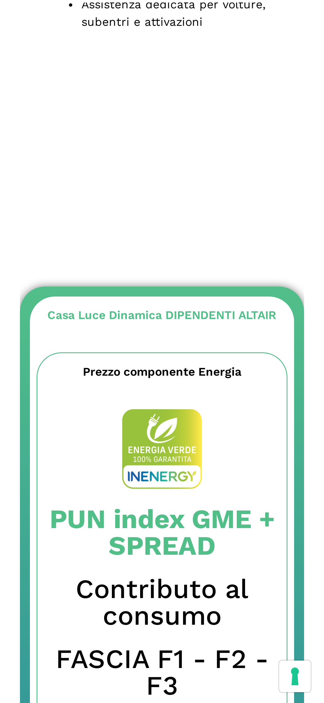
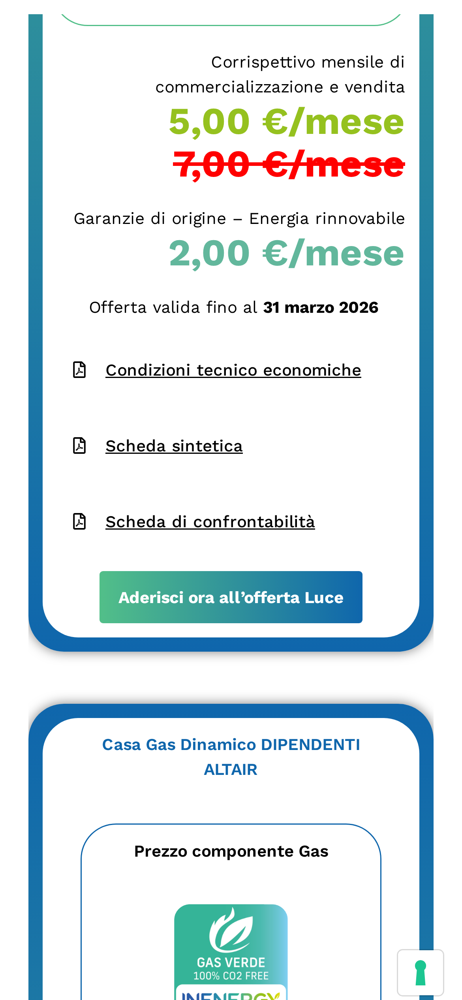
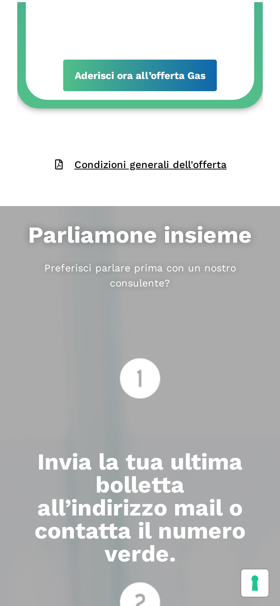
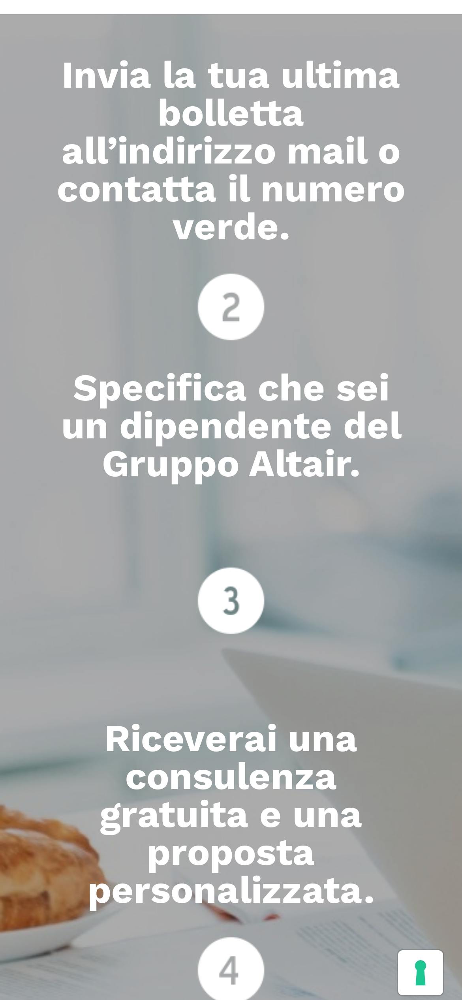
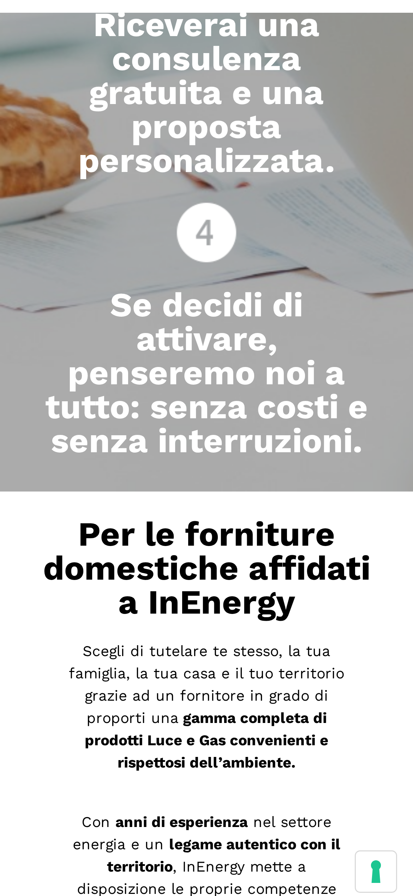
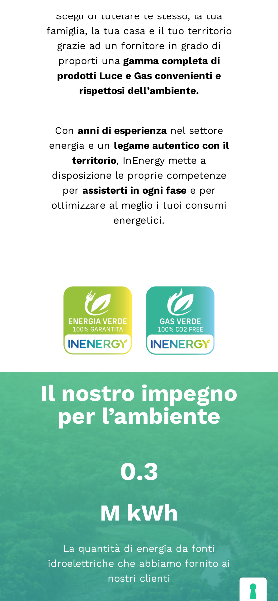
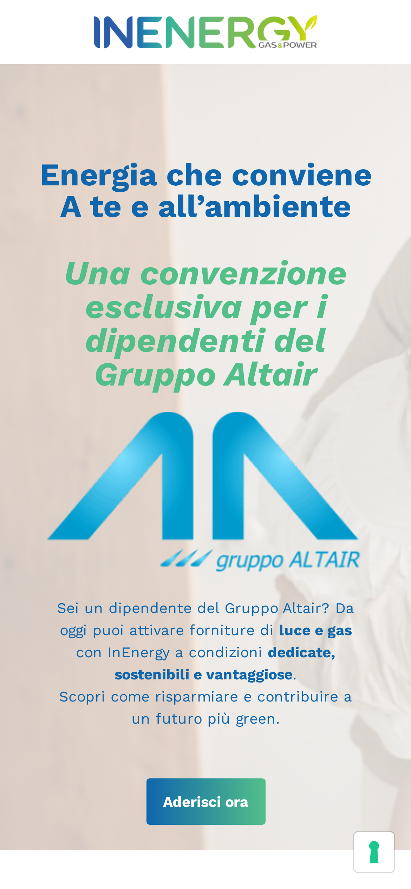
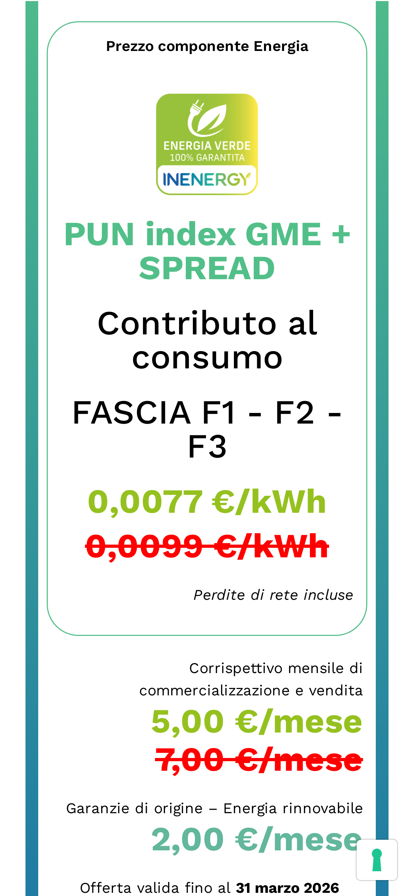

InEnergy Promo — Problemi di layout mobile sulla pagina Gruppo Altair
19 marzo 20261 iterazioneVerificapromo.in-energy.it/gruppo-altairMobile (390×844)
70/100
Problemi significativi di layout mobile
La pagina funziona e i contenuti sono accessibili, ma la resa su telefono presenta diversi difetti visivi: un'immagine mancante che lascia un grande buco vuoto, i link ai documenti PDF con allineamenti incoerenti, le spaziature tra le sezioni irregolari, e la zona “Il nostro impegno per l'ambiente” che manca di respiro. Nessun errore funzionale, ma l'impressione complessiva è poco curata.
Cronologia controllo
14:20Apertura pagina su simulazione mobile (iPhone 12 Pro, 390×844px)
14:21Immagine “happy family” mancante — buco visivo di circa 400px dopo “Perché aderire”
14:22Link PDF con allineamenti misti (sinistra/centro) e spaziature irregolari
14:23Sezione “Parliamone insieme”: 4 passi con gap eccessivi tra numerazione e testo
14:24Sezione “Il nostro impegno per l'ambiente”: nessuno spazio sopra, poco sotto
Dopo la sezione “Perché aderire” (quella con l'elenco dei vantaggi) c'è un grande spazio vuoto alto circa 400 pixel — quasi metà dello schermo del telefono. Succede perché la pagina cerca di mostrare un'immagine di una famiglia, ma il file non si trova più sul server. Il telefono prova a caricare una versione ridotta dell'immagine, non la trova, e al suo posto lascia il vuoto.

Lo spazio vuoto tra “Perché aderire” e la scheda offerta Luce — qui dovrebbe esserci un'immagine
Link ai documenti PDF: allineamenti a caso
I link per scaricare i documenti (condizioni economiche, scheda sintetica, ecc.) non hanno un allineamento uniforme. Nella scheda Luce sono allineati a sinistra. Nella scheda Gas, i primi due sono a sinistra ma il terzo (“Condizioni generali dell'offerta”) è centrato e posizionato fuori dalla scheda, separato dal bottone “Aderisci ora”. Sembra un elemento orfano, dimenticato lì.

Offerta Luce: link a sinistra, ordinati

Offerta Gas: “Condizioni generali” fuori dalla scheda, centrato
I 4 passaggi: spaziature troppo larghe e irregolari
La sezione “Parliamone insieme” mostra 4 passaggi numerati (invia bolletta, specifica che sei dipendente, ricevi consulenza, attiva). Su telefono le distanze tra un passaggio e l'altro sono esagerate: c'è troppo spazio vuoto tra il numero e il testo, e tra un punto e il successivo. Inoltre le spaziature non sono uguali fra loro: il passaggio 2 è più compatto del 3, il 4 è diverso ancora. L'effetto è di una pagina che “galleggia”.

Passaggi 1-3: gap eccessivi tra numero e testo

Passaggi 3-4: spaziature diverse dai precedenti
“Il nostro impegno per l'ambiente”: manca respiro
La sezione verde “Il nostro impegno per l'ambiente” è attaccata alla sezione precedente senza nessuno spazio di separazione (0 pixel sopra). Sotto, il distacco dalla sezione successiva è minimo. L'effetto è che il blocco sembra schiacciato, senza il respiro visivo necessario per dare importanza al messaggio ambientale.

La sezione verde parte immediatamente dopo il testo — zero margine superiore
Contenuti e offerte: tutto leggibile
I contenuti importanti (prezzi delle offerte Luce e Gas, bottoni “Aderisci ora”, modulo di contatto, FAQ) funzionano correttamente e sono leggibili. I problemi sono puramente estetici e di spaziatura, non funzionali.

Intestazione della pagina

Scheda offerta Luce: leggibile e funzionante
Riepilogo
Campo
Valore
Target URL
https://promo.in-energy.it/gruppo-altair
Server
172.238.225.65 (Cloudways Netycom 1545299)
App
promoinenergy (Laravel)
Viewport
390×844 (iPhone 12 Pro, 3x)
Page height
11.839px
Scenario
Verifica mobile
Iterazioni
1
Console errors
4 (tutti 404)
Verdict
ISSUES
Issue 1: Immagine rotta (404 su resize)
Immagine: happy-family-spending-time-together-playing-at-ho-2025-03-14-18-10-18-utc
Srcset dichiarato:
1920w (full) → HTTP 200 ✓
1536x996 → non testato
1024x664 → HTTP 200 ✓
768x498 → HTTP 404 ✗
300x195 → HTTP 404 ✗
150x150 → HTTP 404 ✗
sizes="(max-width: 800px) 100vw, 800px"
Su mobile (390px viewport, 3x DPR) il browser richiede ~1170px.
Sceglie 1024x664 dal srcset → HTTP 200 MA naturalWidth=0.
L'img tag ha width forzato ma l'immagine non si carica.
Bounding box risultante: 282×183px (vuoto)
Posizione: y=1577 (dopo "Perché aderire", prima della card Luce)
Fix: rigenerare i thumbnail WordPress (wp media regenerate)
oppure uploadare nuovamente l'immagine originale.
Issue 2: PDF links alignment inconsistency
6 link PDF totali in pagina (.elementor-button-wrapper)
LUCE (3 link, y=2766-2894):
• "Condizioni tecnico economiche" → text-align: start
• "Scheda sintetica" → text-align: start
• "Scheda di confrontabilità" → text-align: start
✓ Tutti dentro la card, coerenti
GAS (3 link, y=4083-4403):
• "Condizioni tecnico economiche" → text-align: left
• "Scheda sintetica" → text-align: left
• "Condizioni generali offerta" → text-align: center ✗
FUORI dalla card .e-con (background verde/gradiente)
Posizionato DOPO il CTA "Aderisci ora all'offerta Gas"
Wrapper: elementor-element-3d431bf, elementor-align-center
Sembra un widget Elementor posizionato nel container sbagliato
Fix: spostare il widget "Condizioni generali" DENTRO la card Gas,
prima del bottone CTA, e allinearlo a sinistra come gli altri.
Issue 3: 4 punti — spaziature irregolari
Sezione "Parliamone insieme" (y=4559-5979)
4 widget heading numerati su sfondo immagine
Distanze Y tra elementi (top-to-top):
Titolo "Preferisci parlare" → Punto 1: 264px
Punto 1 → Punto 2: 264px
Punto 2 → Punto 3: 296px ✗ (+32px)
Punto 3 → Punto 4: 264px
Distanze icona-numero → testo:
Ogni punto ha ~100-150px di gap verticale tra
l'icona numerata e il testo sottostante.
Su desktop probabilmente i punti sono affiancati in grid.
Su mobile collassano in colonna e i padding desktop
diventano gap verticali eccessivi.
Fix: ridurre padding/margin verticali su mobile per i container
dei 4 punti (.e-con-full children della sezione Parliamone)
Issue 4: Sezione “Impegno ambiente” — spaziatura
Sezione: .elementor-element-7682275 (y=6489, h=817px)
Sfondo: gradiente verde/blu acqua
Sezione precedente (y=6345-6489): padding 24px top/bottom
→ GAP tra prev.bottom e section.top = 0px ✗
Sezione successiva (y=7326): margin-top 20px
→ GAP dopo section = 20px (minimo)
La sezione verde non ha margin-top né la precedente
ha margin-bottom. Risultato: attaccate senza respiro.
Fix: aggiungere margin-top 40-60px alla sezione ambiente
(.elementor-element-7682275) e margin-bottom 40px.
Console errors (4)
Tutti 404:
1. happy-family-...-300x195.jpg (srcset variant)
2. happy-family-...-768x498.jpg (srcset variant)
3. happy-family-...-150x150.jpg (srcset variant)
4. Risorsa aggiuntiva non identificata
Fix raccomandati (priorità)
P1 — Immagine rotta: Rigenerare thumbnail o re-upload immagine. Il buco vuoto è il problema più evidente.
P2 — PDF “Condizioni generali”: Spostare dentro la card Gas in Elementor, allineare a sinistra come gli altri.
P3 — 4 punti spacing: Override CSS mobile per ridurre padding verticali dei container nella sezione “Parliamone insieme”.
P4 — Sezione ambiente: Aggiungere margin-top 40-60px alla sezione verde.